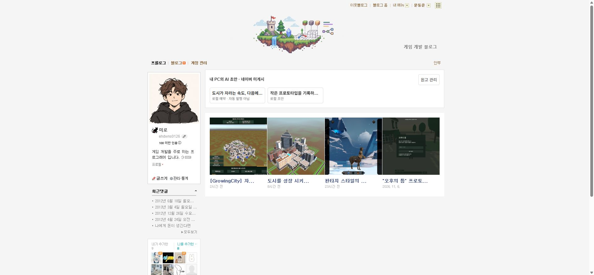

Tracefolio REPORTS & ISSUES
Tracefolio REPORTS & ISSUES미미로 블로그 매니저수정사항
네이버 원본 목록에 초안 카드 통합과 읽기 진입 수정
검증 대기초안 카드 통합과 읽기 진입 구현·DOM 실행 검사는 끝났고 실제 확장 0.3.1 화면 확인을 기다립니다.
작업 결과
초안을 별도 영역에서 관리 패널로 열던 구현을 수정했습니다. 실제 네이버 카드 목록 앞에 원본 카드 구조로 삽입하며 클릭은 같은 탭의 읽기 화면으로 이동합니다. 실제 설치 버전 갱신 후 화면 확인은 남아 있습니다.
변경 내용
적용 내용
- 실제 #prologue dl.p_post_top의 dd.p_photo_d를 복제해 초안을 앞에 삽입하고 같은 4열로 배치합니다.
- 카드 클릭 명령을 open-panel에서 read-draft로 변경했습니다. 읽기 화면에는 목록과 원고 수정 버튼을 제공합니다.
- 원고 제목·본문은 네이버 실제 참조 글의 틀에 로컬로 표시하며 댓글·공감·참조 태그는 숨깁니다. 공개 원문을 수정하거나 게시하지 않습니다.
- 확장 0.3.1과 전체 이동 패키지를 releases에 보관했습니다.
검증
- 실제 네이버 목록 HTML에서 초안 2개 → 기존 글 4개 순서, 기존 카드 마크업 보존, 4열 CSS, 클릭 시 read-draft와 패널 미실행을 검사했습니다. 실행 근거
- 기존 자동 검사 18개 통과.
- ZIP 독립 해제 235개 파일 해시·다른 경로 서버 실행을 검증하고 검증 서버를 종료했습니다.
- 수정 전 실제 화면:

수정 전 별도 초안 영역
남은 사항
- 설치된 확장의 0.3.1 갱신 이후 실제 목록·클릭·읽기 화면 검증 대기.
- 실제 네이버 발행 검증은 사용자 요청대로 보류합니다. 기존 원고는 복구·수정하지 않았습니다.
- 교훈 검토: 같은 목록과 같은 클릭 흐름을 사용한다는 사용자 요구를 프로젝트 AGENTS.md에 반영했습니다. 전역은 기존 원본 대조·검증 규칙과 중복되어 변경하지 않았습니다.
- XERJ 연결 도구가 제공되지 않아 rg·현재 소스·원본 DOM 및 실행 검사로 검증했습니다.
작업 시간
- 제안 시간: 이번 수정 5~10분
- 실제로 완료된 시간: 시작 2026-11-07 22:15:44 Asia/Seoul. 기록 2026-11-07 22:19:42 Asia/Seoul. 실제 확장 검증 완료 시각은 아직 없습니다.
- XERJ: 미사용 — XERJ 도구 미제공. 현재 소스와 실제 원본 DOM으로 검사했습니다.